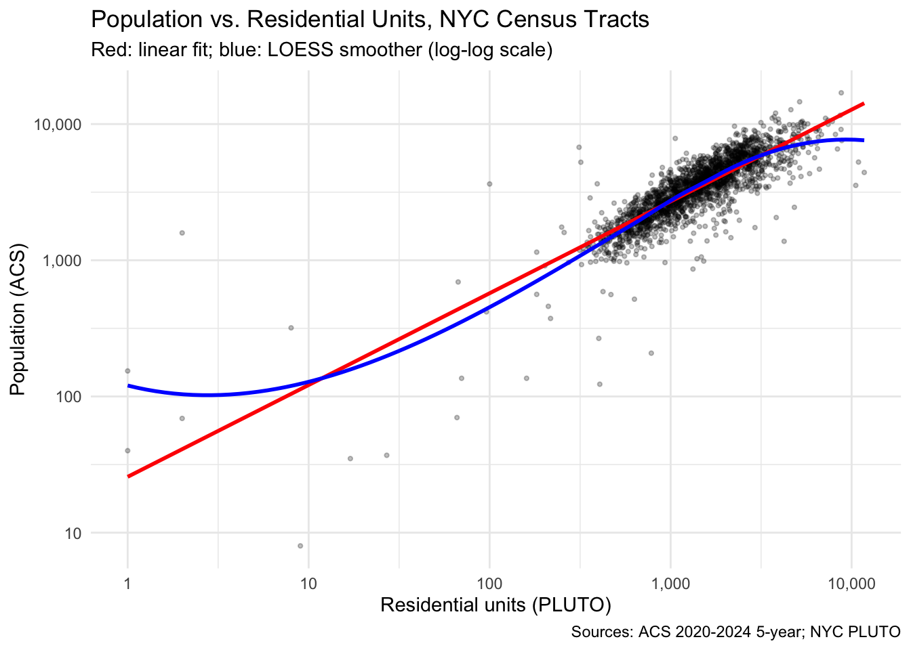
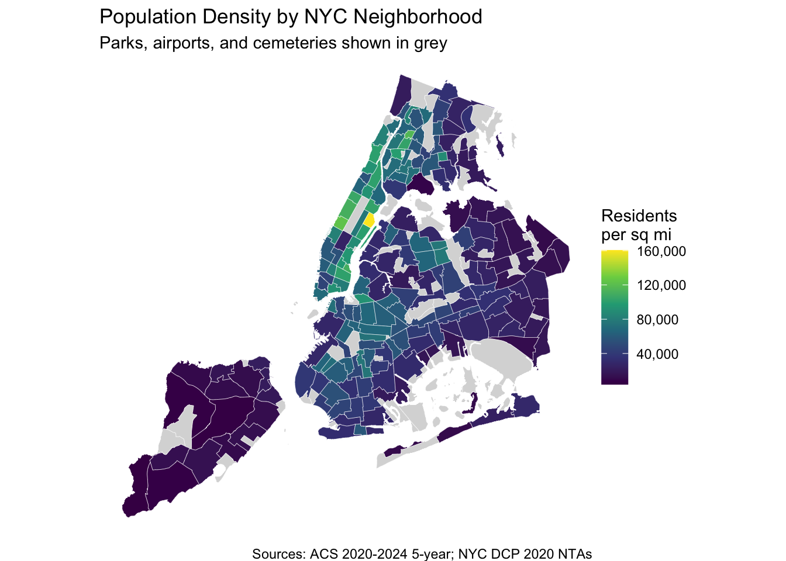
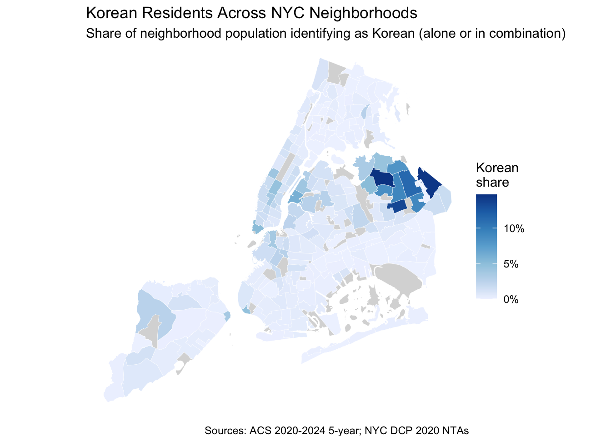
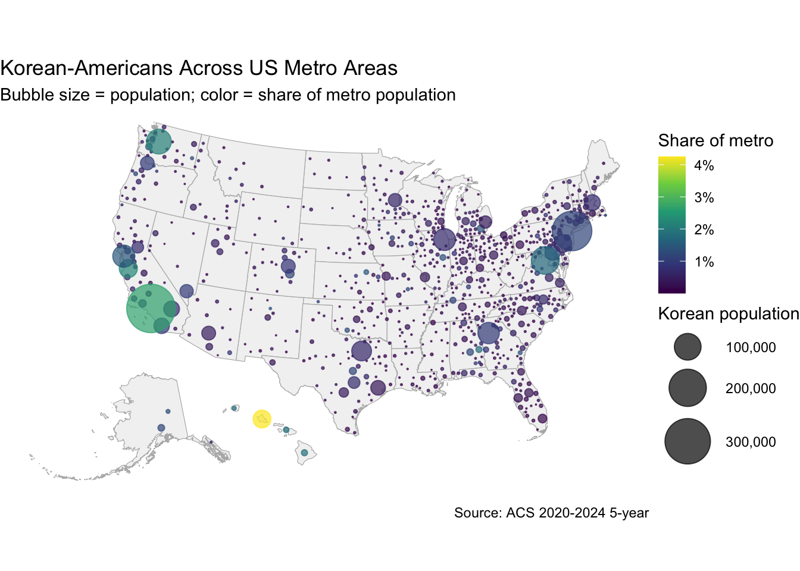

This report is written as part of a travel publication titled Welcomed by the New Colossus: An Atlas of American Communities. The purpose of this report is to explore the geographic distribution of Korean Americans in New York City and across the United States.
I chose Korean Americans because I am interested in understanding how Korean communities have developed in the United States. When people think of Korean communities in New York City they usually think of Koreatown on 32nd Street in Manhattan. However I wanted to figure out whether this place is also where most Korean Americans in New York City live. This report explores the differences between familiar cultural destinations and actual residential communities for Korean Americans.
This analysis uses three main data sources. The American Community Survey (ACS) provides five-year population estimates for the period from 2020 to 2024. The Neighborhood Tabulation Areas (NTA) dataset provides the geographic boundaries of 262 areas in New York City. The PLUTO dataset is used to examine general building and land use characteristics across New York City. This report begins with data collection and preparation. It then presents an exploratory data analysis (EDA) and concludes with an Atlas article based on the findings.
cached_acs =function(file_stem, geometry =FALSE, ...) { ext =if (geometry) "shp"else"csv" path =file.path(DATA_DIR, paste0(file_stem, ".", ext))if (!file.exists(path)) {message("Downloading ", file_stem, " from the Census API ...") res =get_acs(..., geometry = geometry)if (geometry) write_sf(res, path) elsewrite_csv(res, path) }if (geometry) {read_sf(path) } else {read_csv(path, col_types =cols(GEOID =col_character()),show_col_types =FALSE) }}
Task 1: CBSA population
I collected population data at the metropolitan area level from the American Community Survey (ACS). This data is used to identify which metropolitan areas have large Korean American populations across the United States.
Code
cbsa =cached_acs("cbsa_group_pop", geometry =TRUE,geography ="cbsa", variables = GROUP_VARS,year = ACS_YEAR, survey ="acs5", output ="wide") |>select(GEOID, NAME, total = totalE, group = groupE) |>mutate(share = group / total)
Task 2: NYC tract population
I collected population data at the census tract level in New York City. This data allows me to examine the geographic distribution of Korean Americans in more detail within the city.
Code
nyc_tracts =cached_acs("nyc_tract_group_pop", geometry =TRUE,geography ="tract", state ="NY", county = NYC_COUNTIES,variables = GROUP_VARS, year = ACS_YEAR, survey ="acs5", output ="wide") |>select(GEOID, NAME, total = totalE, group = groupE) |>st_transform(NYC_CRS)
Task 3: NYC NTAs
I collected NTA boundary data because census tracts are relatively small and may be difficult for readers to recognize. NTAs provide a more recognizable geographic unit for understanding where Korean Americans live in New York City.
Each census tract is assigned to the NTA with the largest geographic overlap. This method allows me to aggregate population data at the neighborhood level.
I downloaded the PLUTO dataset in batches of 50,000 rows to handle the large volume of data more efficiently. The downloaded data is cached locally to avoid repeated downloads and improve processing efficiency.
I aggregated the PLUTO data at the census tract level to match the geographic unit of the census population data. I also assigned each lot to its corresponding NTA through a spatial join using latitude and longitude for more precise neighborhood-level analysis. Finally I combined the census and PLUTO datasets using the GEOID to analyze population and building characteristics together.
top_office = tracts_full |>st_drop_geometry() |>slice_max(office_area, n =5) |>mutate(NAME =str_remove(NAME, ";.*$")) |>select(NAME, nta_name, office_area)top_office |>gt() |>tab_header(title ="NYC Census Tracts with the Most Office Floor Area",subtitle ="All five are in Manhattan; source: NYC PLUTO") |>cols_label(NAME ="Census Tract", nta_name ="Neighborhood",office_area ="Office Area (sq ft)") |>fmt_number(office_area, decimals =0) |>data_color(columns = office_area, palette ="Blues")
NYC Census Tracts with the Most Office Floor Area
All five are in Manhattan; source: NYC PLUTO
Census Tract
Neighborhood
Office Area (sq ft)
Census Tract 9
Financial District-Battery Park City
17,396,739
Census Tract 13
Financial District-Battery Park City
16,889,181
Census Tract 113
Midtown-Times Square
15,679,979
Census Tract 94
Midtown-Times Square
15,433,200
Census Tract 7
Financial District-Battery Park City
14,790,091
Census Tract 9 in the Financial District has the largest office area at approximately 17.4 million square feet. All five of the top census tracts are located in either the Financial District or Midtown-Times Square. This shows that office spaces are highly concentrated in the two major business districts of Manhattan.
Q2. Which NTA has the most residential units?
Code
top_units = pluto_nta |>filter(!is.na(nta_code)) |>group_by(nta_code, nta_name) |>summarize(res_units =sum(unitsres), .groups ="drop") |>left_join(st_drop_geometry(select(nyc_nta, nta_code, borough)), by ="nta_code") |>slice_max(res_units, n =10) |>select(nta_name, borough, res_units)top_units |>gt() |>tab_header(title ="NTAs with the Most Residential Units",subtitle ="Top 10 neighborhoods; source: NYC PLUTO") |>cols_label(nta_name ="Neighborhood", borough ="Borough",res_units ="Residential Units") |>fmt_number(res_units, decimals =0) |>data_color(columns = res_units, palette ="Blues")
NTAs with the Most Residential Units
Top 10 neighborhoods; source: NYC PLUTO
Neighborhood
Borough
Residential Units
Upper East Side-Lenox Hill-Roosevelt Island
Manhattan
60,305
Upper West Side (Central)
Manhattan
57,297
Upper East Side-Yorkville
Manhattan
50,973
Chelsea-Hudson Yards
Manhattan
46,254
Upper West Side-Lincoln Square
Manhattan
45,373
Forest Hills
Queens
43,709
Murray Hill-Kips Bay
Manhattan
42,865
Hell's Kitchen
Manhattan
40,966
East Village
Manhattan
40,171
Upper East Side-Carnegie Hill
Manhattan
40,016
Upper East Side-Lenox Hill-Roosevelt Island has the highest number of residential units at 60,305. Nine of the top ten neighborhoods are located in Manhattan with Forest Hills in Queens being the only exception. This pattern may be explained by the large number of high-rise apartment buildings in Manhattan that allow more residential units within a limited land area.
Q3. Which tract has the highest population density?
Code
density_tbl = tracts_full |>st_drop_geometry() |>filter(total >=500, res_units >=50, res_area >0) |>mutate(NAME =str_remove(NAME, ";.*$"),pop_per_1000sqft = total / res_area *1000,pop_per_unit = total / res_units)density_tbl |>slice_max(pop_per_unit, n =5) |>select(NAME, nta_name, total, res_units, pop_per_unit, pop_per_1000sqft) |>gt() |>tab_header(title ="Highest Population per Residential Unit (Raw)",subtitle ="Implausible values reflect large lots assigned to a single tract") |>cols_label(NAME ="Tract", nta_name ="Neighborhood", total ="Population",res_units ="Units", pop_per_unit ="Pop. / Unit",pop_per_1000sqft ="Pop. / 1,000 sq ft") |>fmt_number(c(total, res_units), decimals =0) |>fmt_number(c(pop_per_unit, pop_per_1000sqft), decimals =1)
Highest Population per Residential Unit (Raw)
Implausible values reflect large lots assigned to a single tract
Tract
Neighborhood
Population
Units
Pop. / Unit
Pop. / 1,000 sq ft
Census Tract 462.03
Co-op City
6,756
312
21.7
23.4
Census Tract 1208.02
East New York-City Line
5,247
319
16.4
15.2
Census Tract 319
Riverdale-Spuyten Duyvil
693
67
10.3
22.4
Census Tract 334.05
Springfield Gardens (North)-Rochdale Village
3,643
393
9.3
8.5
Census Tract 223.02
Manhattanville-West Harlem
2,870
359
8.0
10.5
Code
density_clean =filter(density_tbl, pop_per_unit <=6)top_by_area =slice_max(density_clean, pop_per_1000sqft, n =1)top_by_unit =slice_max(density_clean, pop_per_unit, n =1)bind_rows(slice_max(density_clean, pop_per_1000sqft, n =3) |>mutate(measure ="Per 1,000 sq ft"),slice_max(density_clean, pop_per_unit, n =3) |>mutate(measure ="Per unit")) |>select(measure, NAME, nta_name, pop_per_1000sqft, pop_per_unit) |>gt(groupname_col ="measure") |>tab_header(title ="Densest Tracts After Removing Implausible Values",subtitle ="Top 3 by each measure; tracts with more than 6 residents per unit excluded") |>cols_label(NAME ="Tract", nta_name ="Neighborhood",pop_per_1000sqft ="Pop. / 1,000 sq ft", pop_per_unit ="Pop. / Unit") |>fmt_number(c(pop_per_1000sqft, pop_per_unit), decimals =1)
Densest Tracts After Removing Implausible Values
Top 3 by each measure; tracts with more than 6 residents per unit excluded
Tract
Neighborhood
Pop. / 1,000 sq ft
Pop. / Unit
Per 1,000 sq ft
Census Tract 29.01
Tribeca-Civic Center
9.9
3.1
Census Tract 397
Belmont
6.7
5.3
Census Tract 85
Queensbridge-Ravenswood-Dutch Kills
6.0
3.3
Per unit
Census Tract 27
Tompkinsville-Stapleton-Clifton-Fox Hills
5.8
5.4
Census Tract 522
St. Albans
4.3
5.4
Census Tract 537
South Williamsburg
4.1
5.3
I excluded census tracts with more than six people per residential unit to reduce the impact of potential data inconsistencies. Based on residential area density, Census Tract 29.01 in Tribeca-Civic Center ranks first with 9.9 people per 1000 square feet. This unusually high density may be related to the presence of group quarters. Based on residential units, Census Tract 27 in Tompkinsville-Stapleton-Clifton-Fox Hills ranks first with 5.4 people per unit. The difference between these results shows that population density rankings depend on how density is measured. The first measure reflects population relative to residential space while the second may reflect differences in household size.
Q4. Top 5 metros (excluding NYC) by share
Code
top_metros = cbsa |>st_drop_geometry() |>filter(str_detect(NAME, "Metro Area"),!str_detect(NAME, "New York-Newark")) |>slice_max(share, n =5)top_metros |>select(NAME, total, group, share) |>gt() |>tab_header(title =paste("Metro Areas with the Highest", GROUP_LABEL, "Share"),subtitle ="Excluding New York metro; ACS 2020-2024 5-year") |>cols_label(NAME ="Metro Area", total ="Total Pop.",group =paste(GROUP_LABEL, "Pop."), share ="Share") |>fmt_number(c(total, group), decimals =0) |>fmt_percent(share, decimals =2) |>data_color(columns = share, palette ="Blues")
Metro Areas with the Highest Korean Share
Excluding New York metro; ACS 2020-2024 5-year
Metro Area
Total Pop.
Korean Pop.
Share
Urban Honolulu, HI Metro Area
1,001,146
42,534
4.25%
Los Angeles-Long Beach-Anaheim, CA Metro Area
12,974,487
343,006
2.64%
San Jose-Sunnyvale-Santa Clara, CA Metro Area
1,969,337
43,894
2.23%
Seattle-Tacoma-Bellevue, WA Metro Area
4,061,920
85,648
2.11%
Kahului-Wailuku, HI Metro Area
164,589
3,045
1.85%
Excluding New York City, Urban Honolulu has the highest percentage of Korean Americans at 4.25%. All five of the top metropolitan areas are located on the West Coast or in Hawaii. Los Angeles ranks second by percentage but has a much larger Korean American population of approximately 343 thousand. In contrast Kahului-Wailuku has only 3,045 Korean Americans but ranks highly because of its smaller total population. This shows that a high percentage of Korean Americans does not necessarily indicate a large Korean American population.
The Hispanic population is the largest group in the Los Angeles metropolitan area at 45.0%. Non-Hispanic White residents account for 27.7% of the population while Asian and Black residents account for 16.7% and 6.0% respectively. No single group represents more than half of the total population. Korean Americans account for 2.64% of the total population and represent one part of the diverse Asian population in Los Angeles.
Q6. Where do US Korean-Americans live?
Code
us_total =cached_acs("us_group_pop", geography ="us",variables = GROUP_VARS, year = ACS_YEAR, survey ="acs5") |>filter(variable =="group") |>pull(estimate)ny_state =cached_acs("ny_state_group_pop", geography ="state", state ="NY",variables = GROUP_VARS, year = ACS_YEAR, survey ="acs5") |>filter(variable =="group") |>pull(estimate)nyc_city_group =sum(nyc_tracts$group, na.rm =TRUE)metro_share = cbsa |>st_drop_geometry() |>mutate(pct_of_us = group / us_total,NAME =str_remove(NAME, " Metro Area$")) |>slice_max(pct_of_us, n =10) |>select(NAME, group, pct_of_us)metro_share |>gt() |>tab_header(title =paste("Share of All US", GROUP_LABEL, "Residents by Metro"),subtitle ="Top 10 metro areas; ACS 2020-2024 5-year") |>cols_label(NAME ="Metro Area", group ="Population", pct_of_us ="% of US Total") |>fmt_number(group, decimals =0) |>fmt_percent(pct_of_us, decimals =1) |>data_color(columns = pct_of_us, palette ="Blues")
Share of All US Korean Residents by Metro
Top 10 metro areas; ACS 2020-2024 5-year
Metro Area
Population
% of US Total
Los Angeles-Long Beach-Anaheim, CA
343,006
16.6%
New York-Newark-Jersey City, NY-NJ
225,542
10.9%
Washington-Arlington-Alexandria, DC-VA-MD-WV
108,241
5.2%
Seattle-Tacoma-Bellevue, WA
85,648
4.2%
San Francisco-Oakland-Fremont, CA
67,253
3.3%
Chicago-Naperville-Elgin, IL-IN
65,745
3.2%
Atlanta-Sandy Springs-Roswell, GA
62,611
3.0%
Dallas-Fort Worth-Arlington, TX
52,885
2.6%
San Jose-Sunnyvale-Santa Clara, CA
43,894
2.1%
Urban Honolulu, HI
42,534
2.1%
There are approximately 2.06 million Korean Americans in the United States. The Los Angeles and New York metropolitan areas account for 16.6% and 10.9% of this population respectively. More than one in four Korean Americans live in these two metropolitan areas. About 7.1% of Korean Americans nationwide live in New York State and 4.5% live in New York City. Only about 41% of Korean Americans in the New York metropolitan area live within New York City. The remaining population lives outside the city in surrounding areas such as New Jersey and Long Island.
Q7. Is the population–housing relationship linear?
Code
scatter_df = tracts_full |>st_drop_geometry() |>filter(total >0, res_units >0)r_units =cor(scatter_df$total, scatter_df$res_units)r_log_units =cor(log(scatter_df$total), log(scatter_df$res_units))slope_units =coef(lm(log(total) ~log(res_units), data = scatter_df))[2]ggplot(scatter_df, aes(x = res_units, y = total)) +geom_point(alpha =0.25, size =0.8) +geom_smooth(method ="lm", color ="red", se =FALSE) +geom_smooth(method ="loess", color ="blue", se =FALSE) +scale_x_log10(labels = comma) +scale_y_log10(labels = comma) +labs(title ="Population vs. Residential Units, NYC Census Tracts",subtitle ="Red: linear fit; blue: LOESS smoother (log-log scale)",x ="Residential units (PLUTO)", y ="Population (ACS)",caption ="Sources: ACS 2020-2024 5-year; NYC PLUTO") +theme_minimal()

Population and residential units have a strong positive correlation of 0.77. However the relationship is not proportional. The estimated slope of 0.67 in the log-log regression indicates that a 1% increase in residential units is associated with approximately a 0.67% increase in population. This suggests that census tracts with more residential units tend to have fewer people per unit. This may be related to smaller household sizes in high-rise residential areas in Manhattan. The relationship also becomes less consistent at both ends of the distribution. These findings suggest that the relationship between population and residential units is more complex than a simple linear relationship.
Q8. Which NTAs have the tallest buildings?
Code
tall_nta = pluto_nta |>filter(!is.na(nta_code), numfloors >0) |>group_by(nta_name) |>summarize(max_floors =max(numfloors),mean_floors =mean(numfloors),n_40plus =sum(numfloors >=40),.groups ="drop") |>slice_max(n_40plus, n =10)tall_nta |>gt() |>tab_header(title ="NTAs with the Tallest Buildings",subtitle ="Ranked by number of buildings with 40+ floors") |>cols_label(nta_name ="Neighborhood", max_floors ="Max Floors",mean_floors ="Avg Floors", n_40plus ="Buildings 40+ Floors") |>fmt_number(c(max_floors, n_40plus), decimals =0) |>fmt_number(mean_floors, decimals =1) |>data_color(columns = n_40plus, palette ="Blues")
NTAs with the Tallest Buildings
Ranked by number of buildings with 40+ floors
Neighborhood
Max Floors
Avg Floors
Buildings 40+ Floors
Midtown-Times Square
98
15.2
107
Financial District-Battery Park City
104
16.4
41
East Midtown-Turtle Bay
77
10.5
32
Chelsea-Hudson Yards
71
6.9
26
Midtown South-Flatiron-Union Square
102
10.0
24
Upper West Side-Lincoln Square
54
8.6
22
Hell's Kitchen
60
6.5
20
Long Island City-Hunters Point
69
4.7
20
Murray Hill-Kips Bay
57
8.2
18
Downtown Brooklyn-DUMBO-Boerum Hill
74
4.7
15
Midtown-Times Square has the highest number of buildings with 40 or more floors at 107. This is more than 2.5 times the number in the Financial District which ranks second with 41 buildings. Eight of the top ten neighborhoods are located in Manhattan. The only exceptions are Long Island City in Queens and Downtown Brooklyn. The Financial District and Midtown-Times Square also have much higher average floor counts than these two neighborhoods. This suggests that tall buildings are more concentrated throughout these areas in Manhattan.
Q9. How does population density vary across NYC?
Code
nta |>mutate(pop_density =if_else(nta_type ==0, pop_density, NA_real_)) |>ggplot() +geom_sf(aes(fill = pop_density), color ="white", linewidth =0.1) +scale_fill_viridis_c(labels = comma, na.value ="grey85",name ="Residents\nper sq mi") +labs(title ="Population Density by NYC Neighborhood",subtitle ="Parks, airports, and cemeteries shown in grey",caption ="Sources: ACS 2020-2024 5-year; NYC DCP 2020 NTAs") +theme_void()

Code
dense_nta = nta |>st_drop_geometry() |>filter(nta_type ==0) |>slice_max(pop_density, n =5) |>select(nta_name, borough, pop_density)
Upper East Side-Yorkville has the highest population density at approximately 160 thousand people per square mile. Four of the top five neighborhoods are located in Manhattan with Fordham Heights in the Bronx being the only exception. The map shows that population density is generally higher in Manhattan and the western Bronx as well as northern Brooklyn. In contrast Staten Island and eastern Queens have relatively low population densities. These results show that population density varies significantly across New York City.
Q10. How many New Yorkers live in primarily commercial areas?
Code
commercial_df = tracts_full |>st_drop_geometry() |>filter(bldg_area >0) |>mutate(com_share = com_area / bldg_area)nyc_total_pop =sum(nyc_tracts$total, na.rm =TRUE)commercial_tbl =tibble(threshold =c(0.5, 0.6, 0.75)) |>mutate(n_tracts =map_int(threshold, \(t) sum(commercial_df$com_share > t)),residents =map_dbl(threshold, \(t)sum(commercial_df$total[commercial_df$com_share > t])),pct_nyc = residents / nyc_total_pop)commercial_tbl |>gt() |>tab_header(title ="Residents of Primarily Commercial Tracts",subtitle ="Sensitivity to the definition of 'primarily commercial'") |>cols_label(threshold ="Commercial share of floor area >",n_tracts ="Tracts", residents ="Residents", pct_nyc ="% of NYC") |>fmt_percent(c(threshold, pct_nyc), decimals =1) |>fmt_number(c(n_tracts, residents), decimals =0)
Residents of Primarily Commercial Tracts
Sensitivity to the definition of 'primarily commercial'
Commercial share of floor area >
Tracts
Residents
% of NYC
50.0%
284
537,981
6.3%
60.0%
211
288,456
3.4%
75.0%
143
117,632
1.4%
I defined commercial areas based on the percentage of commercial floor space relative to total building floor space. Using a threshold of 50% results in approximately 538 thousand residents or 6.3% of the NYC population. Increasing the threshold to 75% reduces this number to approximately 118 thousand residents or 1.4%. The estimated population differs by a factor of about 4.6 depending on the threshold. Therefore it is more appropriate to present a range of estimates rather than rely on a single definition of commercial areas.
Welcomed by the New Colossus: Korean-Americans
The history of Korean immigration to the United States dates back to 1903 when the first major group of Korean immigrants arrived in Hawaii to work on plantations. Approximately seven thousand Korean immigrants arrived between 1903 and 1905. However Korean immigration was severely restricted by the Immigration Act of 1924.
A major turning point came with the Immigration and Nationality Act of 1965. This law removed national origin quotas and placed greater emphasis on family reunification. Large-scale Korean immigration accelerated after the law was fully implemented in 1968. The Korean population in the United States was approximately 100 thousand in 1965. According to my analysis of the ACS data from 2020 to 2024 the Korean American population has reached approximately 2.06 million. This represents more than a 20-fold increase and reflects the significant growth of Korean communities across the United States.
Code
ggplot(nta) +geom_sf(aes(fill = share), color ="white", linewidth =0.1) +scale_fill_distiller(palette ="Blues", direction =1, labels = percent,na.value ="grey85", name =paste(GROUP_LABEL, "\nshare")) +labs(title =paste(GROUP_LABEL, "Residents Across NYC Neighborhoods"),subtitle ="Share of neighborhood population identifying as Korean (alone or in combination)",caption ="Sources: ACS 2020-2024 5-year; NYC DCP 2020 NTAs") +theme_void()

When tourists think of Koreatown in New York City they usually think of 32nd Street in Manhattan. However the map shows that Korean American residential communities are mainly concentrated in northeastern Queens. These communities include Murray Hill-Broadway Flushing and Bayside as well as Douglaston-Little Neck. Murray Hill-Broadway Flushing has approximately 7,900 Korean Americans who account for 15% of the neighborhood population. Korean Americans also represent approximately 14% of the population in Douglaston-Little Neck. These findings suggest that Manhattan’s Koreatown serves as a cultural and tourist destination while northeastern Queens serves as a major residential center for Korean Americans.
Code
states_path =file.path(DATA_DIR, "us_states.shp")if (!file.exists(states_path)) { tigris::states(cb =TRUE, year = ACS_YEAR) |>write_sf(states_path)}us_states =read_sf(states_path) |>filter(!STUSPS %in%c("PR", "VI", "GU", "MP", "AS")) |> tigris::shift_geometry()cbsa_points = cbsa |>filter(!str_detect(NAME, ", PR"), group >0) |> tigris::shift_geometry() |>st_centroid()ggplot() +geom_sf(data = us_states, fill ="grey95", color ="grey70", linewidth =0.2) +geom_sf(data =arrange(cbsa_points, group),aes(size = group, color = share), alpha =0.7) +scale_size_area(max_size =14, labels = comma, name ="Korean population") +scale_color_viridis_c(labels = percent, name ="Share of metro") +labs(title ="Korean-Americans Across US Metro Areas",subtitle ="Bubble size = population; color = share of metro population",caption ="Source: ACS 2020-2024 5-year") +theme_void()

Across the United States the Los Angeles metropolitan area has the largest Korean American population and accounts for 16.6% of the national total. The New York metropolitan area follows at 10.9%. However Urban Honolulu has the highest percentage of Korean Americans relative to its local population at 4.25% among the metropolitan areas examined. This is particularly interesting because Hawaii was where Korean immigration to the United States began in 1903.
Only about 41% of Korean Americans in the New York metropolitan area live within New York City. The remaining population lives in surrounding areas such as New Jersey and Long Island. The map also shows large Korean American communities in other metropolitan areas such as Atlanta and Dallas as well as Washington DC. This suggests that Korean American communities have expanded beyond their traditional population centers on the West Coast and in New York.
Manhattan’s Koreatown is a popular cultural destination while many Korean Americans live in Queens and the surrounding suburbs. For visitors who want to experience everyday life in Korean American communities I recommend taking the 7 train to Flushing and exploring the Korean neighborhoods in northeastern Queens.
Conclusion
This report shows that the geographic distribution of Korean Americans is different from what people might initially expect. Although Manhattan’s Koreatown is a well-known cultural destination the main residential communities are located in northeastern Queens and the surrounding suburbs. At the national level Korean Americans are highly concentrated in Los Angeles and New York but also have significant communities in Hawaii and other metropolitan areas across the United States. In addition the exploratory data analysis shows that results can vary significantly depending on how population density and commercial areas are defined. Overall this report highlights the importance of using data to better understand the geographic distribution of communities.
NoteAI Usage Statement
I used Claude throughout this project to help with R coding and debugging. It helped me fix errors related to the installation of the tidycensus package and the activation of the Census API key. I also used Claude to learn how to create maps that visualize the geographic distribution of Korean Americans in New York City and across the United States. It helped me review my analysis results and understand unexpected findings.